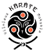

<!DOCTYPE html>
<html lang="en">
</html>
<head>
 <meta charset="UTF-8">
 <meta name="viewport" content="widht=device-width, initial-scale=1.0">
 <meta http-equiv="X-UA-Compatible" content="ie=edge">
 <title> Karate </title>
 <link rel="stylesheet" href="https://maxcdn.bootstrapcdn.com/bootstrap/4.0.0/css/bootstrap.min.css">
 <script src="https://ajax.googleapis.com/ajax/libs/jquery/3.3.1/jquery.min.js"></script>
 <script src="https://cdnjs.cloudflare.com/ajax/libs/popper.js/1.12.9/umd/popper.min.js"></script>
 <script src="https://maxcdn.bootstrapcdn.com/bootstrap/4.0.0/js/bootstrap.min.js"></script>
 <script src="https://use.fontawesome.com/releases/v5.0.8/js/all.js"></script>
 <link rel="stylesheet" href="assets/css/main.css">
 <link rel="stylesheet" href="dist/css/swiper.min.css">
 <link rel="stylesheet" href="css/style.css">
 <script src="dist/js/swiper.min.js"></script>
</head>
<nav class="navbar navbar-expand-md navbar-light bg-light stiky-top">
  <div class="container-fluid">
  <a href="#" class="navbar-brand"></a>
     <nav>
         <ul class="topmenu">
          <li><a href="index.html">Home</a></li>
          <li><a href="about us.html">Apie Mus</a>
             <ul class="submenu">
               <li><a href="club.html">Klubas</a></li>
               <li><a href="training.html">Treneriai</a></li>
               <li><a href="treniruotės.html">Treniruotės</a></li>
               <li><a href="feedback.html">Atsiliepimai</a></li>
          
           </ul>
          </li>

          <li><a href="news_karate.html">Naujienos Karate</a>
            <ul class="submenu">
               <li><a href="Belt system.html">Diržū Sistema</a></li>
                 <li><a href="Examination.html">Examinū Programa</a></li>

           </ul>
          </li>
          
           <li><a href="https://docs.google.com/forms/d/e/1FAIpQLSepurnw6dKv2WFKziO5Givd5FEWaIfKGzWeXhXHTwQN1TUvuA/viewform?vc=0&c=0&w=1&flr=0">Registration</a></li>
          
          
           </ul>
           </li>
         </ul>
       </nav>
</div>
</nav>
  <!--Блок с характеристиками -->
  <div class="container-fluid">
    <div class="row text-center alert">
        <div class="col-12">
            <h1 class="display-4">Karate Hestory</h1>
    
        </div>
    <hr>
    <div class="col-12">
        <p class="lead">Tradicinis karate do – tai kovos menas, kurio šaknys glūdi piečiausioje Japonijos prefektūroje
          Okinavoje ir siekia daugiau kaip dviejų tūkstančių metų istoriją. Terminas „kara te“ (jap. k. 空手),
          išvertus iš japonų kalbos reiškia „tuščia ranka“, o „karate do“ – „tuščios rankos kelias“. Todėl
          karate dar vadinamas beginkle savigynos sistema.
          Pagal Gichinį Funakoshį, karate yra ne technikos rinkinys nugalėti priešą, bet visų pirma tai
          galimybė, fizinių pratimų ir sunkaus darbo treniruočių metu dėka, padėti formuotis žmogaus
          charakteriui. Pagrindinė karate mintis yra išgeneruoti maksimalią jėgą iš vidaus ir išnaudoti
          potencialias kūno galimybes. To galima pasiekti tada, kai viduje surandamas ne tik fizinis, bet ir
          psichologinis, balansas.
          Karate kovos meno techninė bazė randama Tode principuose, o filosofinį pagrindą sudaro
          japonų Budo principas, kurio esmė yra pasiekti pergalę be kovos, o ne sužeisti oponentą.
          Tradicinis karate nuo kitų karate šakų išsiskiria tuo, kad jame naudojama ne raumenų jėga, bet
          tarpusavyje subalansuotas viso kūno derinys.
          
          Šiandien šis kovos menas praktikuojamas pagal pasaulio tradicinio karate federacijos (WTKF)
          reglamentą, kurio tikslas, bendradarbiaujant su kitomis šalimis apsaugoti ir skleisti originalų
          tradicinį karate, remiantis Budo filosofijos pamatu.
          Treniruotėse mokomės suprasti, kas yra tikrasis tikslas, kaip sukurti kelią ir strategijas, kuriomis
          galima būtų jo pasiekti ir kaip įveikti atsirandančias pakeliui kliūtis. Vadovaujamės asmeninio
          tobulėjimo principu: „Šiandien aš turiu būti geresnis, nei buvau vakar, o rytoj turiu būti geresnis,
          nei esu šiandien.“</p>
    </div>
</div>
<br></br>
  <br></br>
  <br></br>
  <br></br>
  <br></br>
  <br></br>
  <br></br>
  <br></br>
  <br></br>
  <br></br>
  
 
  
<footer>
  <nav>
    <a href="index.html">Home</a>
    <a href="about us.html">Apie Mus</a>
       <ul class="submenu">
         <a href="club.html">Klubas</a>
         <a href="training.html">Treneriai</a>
         <a href="treniruotės.html">Treniruotės</a>
         <a href="feedback.html">Atsiliepimai</a>
    
     </ul>
    </li>

    <a href="news_karate.html">Naujienos Karate</a>
      
       
         <a href="Belt system.html">Diržū Sistema</a>
           <a href="Examination.html">Examinū Programa</a>

     </ul>
    </li>
    
     <a href="https://docs.google.com/forms/d/e/1FAIpQLSepurnw6dKv2WFKziO5Givd5FEWaIfKGzWeXhXHTwQN1TUvuA/viewform?vc=0&c=0&w=1&flr=0">Registration</a>
    
    
  </nav>
  <div class="logo">
    <a href="index.html"></a>
  </div>
  <div class="social">
    <a href="https://www.facebook.com/vilniauskaratemokykla"></a>
    <a href="#"></a>
    <a href="#"></a>
  </div>
</footer>